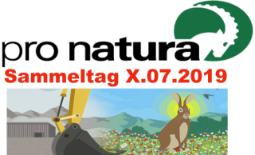

<!doctype html>
<html lang="en">
    <head>

        <meta charset="utf-8">
        <meta http-equiv="X-UA-Compatible" content="IE=edge">
        <meta name="viewport" content="initial-scale=1,user-scalable=no,maximum-scale=1,width=device-width">
        <meta name="mobile-web-app-capable" content="yes">
        <meta name="apple-mobile-web-app-capable" content="yes">
        <link rel="stylesheet" href="css/leaflet.css"><link rel="stylesheet" href="css/L.Control.Locate.min.css">
        <link rel="stylesheet" href="css/qgis2web.css"><link rel="stylesheet" href="css/fontawesome-all.min.css">
        <link rel="stylesheet" href="css/MarkerCluster.css">
        <link rel="stylesheet" href="css/MarkerCluster.Default.css">
        <link rel="stylesheet" href="css/leaflet-control-geocoder.Geocoder.css">
        <style>
        #map {
            width: 1165px;
            height: 624px;
        }
        </style>
        <title></title>
    </head>
    <body>
        <div id="map">
        </div>
        <script src="js/qgis2web_expressions.js"></script>
        <script src="js/leaflet.js"></script><script src="js/L.Control.Locate.min.js"></script>
        <script src="js/leaflet.rotatedMarker.js"></script>
        <script src="js/leaflet.pattern.js"></script>
        <script src="js/leaflet-hash.js"></script>
        <script src="js/Autolinker.min.js"></script>
        <script src="js/rbush.min.js"></script>
        <script src="js/labelgun.min.js"></script>
        <script src="js/labels.js"></script>
        <script src="js/leaflet-control-geocoder.Geocoder.js"></script>
        <script src="js/leaflet.markercluster.js"></script>
        <script src="data/Schweiz_slim_1.js"></script>
        <script src="data/Sammel_2.js"></script>
        <script>
        var map = L.map('map', {
            zoomControl:true, maxZoom:28, minZoom:1
        })
        var hash = new L.Hash(map);
        map.attributionControl.setPrefix('<a href="https://github.com/tomchadwin/qgis2web" target="_blank">qgis2web</a> &middot; <a href="http://leafletjs.com" title="A JS library for interactive maps">Leaflet</a>; <a href="pronatura.ch" target="_blank">Pro Natura 2019</a> &middot; <a href="http://maps.stamen.com" target="_blank">Stamen maps</a> &middot');
        L.control.locate({locateOptions: {maxZoom: 19}}).addTo(map);
        var bounds_group = new L.featureGroup([]);
        function setBounds() {
            if (bounds_group.getLayers().length) {
                map.fitBounds(bounds_group.getBounds());
            }
            map.setMaxBounds(map.getBounds());
        }
        var layer_StamenWatercolor_0 = L.tileLayer('http://c.tile.stamen.com/watercolor/{z}/{x}/{y}.jpg', {
            opacity: 0.7,
            attribution: '',
        });
        layer_StamenWatercolor_0;
        map.addLayer(layer_StamenWatercolor_0);
        function pop_Schweiz_slim_1(feature, layer) {
            var popupContent = '<table>\
                    <tr>\
                        <td colspan="2">' + (feature.properties['UUID'] !== null ? Autolinker.link(String(feature.properties['UUID'])) : '') + '</td>\
                    </tr>\
                </table>';
            layer.bindPopup(popupContent, {maxHeight: 400});
        }

        function style_Schweiz_slim_1_0() {
            return {
                pane: 'pane_Schweiz_slim_1',
                opacity: 1,
                color: 'rgba(35,35,35,1.0)',
                dashArray: '',
                lineCap: 'butt',
                lineJoin: 'miter',
                weight: 2.0, 
                fill: true,
                fillOpacity: 1,
                fillColor: 'rgba(106,176,123,0.3411764705882353)',
            }
        }
        map.createPane('pane_Schweiz_slim_1');
        map.getPane('pane_Schweiz_slim_1').style.zIndex = 401;
        map.getPane('pane_Schweiz_slim_1').style['mix-blend-mode'] = 'normal';
        var layer_Schweiz_slim_1 = new L.geoJson(json_Schweiz_slim_1, {
            attribution: '',
            pane: 'pane_Schweiz_slim_1',
            onEachFeature: pop_Schweiz_slim_1,
            style: style_Schweiz_slim_1_0,
        });
        bounds_group.addLayer(layer_Schweiz_slim_1);
        map.addLayer(layer_Schweiz_slim_1);
        function pop_Sammel_2(feature, layer) {
            var popupContent = '<table>\
                    <tr>\
                        <td colspan="2">' + (feature.properties['id'] !== null ? Autolinker.link(String(feature.properties['id'])) : '') + '</td>\
                    </tr>\
                    <tr>\
                        <td colspan="2"><strong>Gemeinde</strong><br />' + (feature.properties['Gemeinde'] !== null ? Autolinker.link(String(feature.properties['Gemeinde'])) : '') + '</td>\
                    </tr>\
                    <tr>\
                        <td colspan="2"><strong>Anlass</strong><br />' + (feature.properties['Anlass'] !== null ? Autolinker.link(String(feature.properties['Anlass'])) : '') + '</td>\
                    </tr>\
                    <tr>\
                        <td colspan="2"><strong>Uhrzeit</strong><br />' + (feature.properties['Uhrzeit'] !== null ? Autolinker.link(String(feature.properties['Uhrzeit'])) : '') + '</td>\
                    </tr>\
                </table>';
            layer.bindPopup(popupContent, {maxHeight: 400});
        }

        function style_Sammel_2_0() {
            return {
                pane: 'pane_Sammel_2',
        rotationAngle: 0.0,
        rotationOrigin: 'center center',
        icon: L.icon({
            iconUrl: 'markers/Logo_centre_o.svg',
            iconSize: [171.0, 171.0]
        }),
            }
        }
        map.createPane('pane_Sammel_2');
        map.getPane('pane_Sammel_2').style.zIndex = 402;
        map.getPane('pane_Sammel_2').style['mix-blend-mode'] = 'normal';
        var layer_Sammel_2 = new L.geoJson(json_Sammel_2, {
            attribution: '',
            pane: 'pane_Sammel_2',
            onEachFeature: pop_Sammel_2,
            pointToLayer: function (feature, latlng) {
                var context = {
                    feature: feature,
                    variables: {}
                };
                return L.marker(latlng, style_Sammel_2_0(feature));
            },
        });
        var cluster_Sammel_2 = new L.MarkerClusterGroup({showCoverageOnHover: false,
            spiderfyDistanceMultiplier: 2});
        cluster_Sammel_2.addLayer(layer_Sammel_2);

        bounds_group.addLayer(layer_Sammel_2);
        cluster_Sammel_2.addTo(map);
        var osmGeocoder = new L.Control.Geocoder({
            collapsed: true,
            position: 'topleft',
            text: 'Search',
            title: 'Testing'
        }).addTo(map);
        document.getElementsByClassName('leaflet-control-geocoder-icon')[0]
        .className += ' fa fa-search';
        document.getElementsByClassName('leaflet-control-geocoder-icon')[0]
        .title += 'Search for a place';
        setBounds();
        //logo position: bottomright, topright, topleft, bottomleft
        var logo = L.control({position: 'bottomleft'});
        logo.onAdd = function(map){
        var div = L.DomUtil.create('div', 'myclass');
        div.innerHTML= "";
        return div;
        }
    logo.addTo(map);
        </script>
    </body>
</html>
